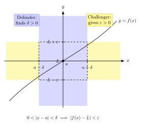

极限究竟是什么?
第四卷, 我们换一个看物理的角度: 不再追问世界 "是什么", 而是追问描述世界的语言 — 数学 — "为什么是这样". 第一节, 从最普通的一个动作开始: 你看着一辆车的里程表, 它显示某一瞬间的速度是 $60\,\mathrm{km/h}$. 但 "某一瞬间的速度" 这个词组, 听上去自然, 想清楚却惊心动魄.
速度是位移除以时间, $v=\Delta x/\Delta t$. 这没问题. 但 "瞬间" 意味着 $\Delta t = 0$, 而 $\Delta x / 0$ 在数学上没有意义. 于是我们退一步, 说: 取一段很短的时间 $\Delta t$, 算 $\Delta x/\Delta t$, 然后让 $\Delta t \to 0$. 这就是 Newton 称为 "fluxion" (流量) 的东西, Leibniz 写作 $\mathrm{d}x/\mathrm{d}t$. 整个 17–18 世纪的微积分都跑得飞快, 算出了行星轨道、潮汐、振动 — 但谁都说不清 "$\Delta t \to 0$" 这个箭头到底是什么操作. Berkeley 主教 1734 年讥讽: 这些 "已逝量的鬼魂" (ghosts of departed quantities) 究竟是零还是不是零? 是零, 那 $\Delta x/\Delta t$ 没意义; 不是零, 那答案就不准确. 微积分的根, 一直拖到 1820 年代才被 Cauchy 在巴黎综合工科学校的讲义里第一次说清, 又过了三十多年, 才被 Weierstrass 削成了我们今天教科书里的样子.
本节的目的就是补这一刀.
一、Cauchy 之前: "无穷小" 为什么不够用
先把问题看具体. 设一个粒子的位置 $x(t) = t^2$ (单位略去). 我们想知道 $t=2$ 时的瞬时速度. 用差商:
$$\frac{\Delta x}{\Delta t} = \frac{(2+\Delta t)^2 - 2^2}{\Delta t} = \frac{4\Delta t + (\Delta t)^2}{\Delta t} = 4 + \Delta t. \tag{1}$$
Newton 在这里说: 让 $\Delta t$ 变成 "无穷小" (evanescent), 那么 $\Delta t$ 这一项消失, 剩下 $4$. Leibniz 说: 写 $\mathrm{d}x/\mathrm{d}t = 4 + \mathrm{d}t = 4$, 因为 $\mathrm{d}t$ 是无穷小 — 比任何正实数小, 但又不等于零. 这套语言能算对答案, 却把 "$\mathrm{d}t$" 当成一种新的数; 它既不是 $0$ (否则除法不行), 也不是任何正实数 (否则结果不准). 这是 Berkeley 抓住的把柄, 也是 18 世纪整整一代分析学家无法干净回答的难题.
问题不在 "答案对不对", 而在 "操作合不合法". 合法的数学需要的是: 在标准实数系 $\mathbb{R}$ 里 — 没有 "无穷小" 这种新对象 — 用有限的、可检验的断言, 把上面那个 "让 $\Delta t \to 0$" 翻译清楚. Cauchy 与 Weierstrass 的核心贡献, 就是发现这个翻译不需要新对象, 只需要换一种语法.
二、ε-δ 定义: 挑战者与防守者的游戏
定义如下. 设 $f$ 在 $a$ 的某个去心邻域上有定义.
定义 (2) — 极限的 ε-δ 形式. 我们说 $\lim_{x\to a} f(x) = L$, 当且仅当
$$\forall \varepsilon \gt 0,\ \exists \delta \gt 0 \text{ 使得 } 0 \lt |x-a| \lt \delta \implies |f(x) - L| \lt \varepsilon. \tag{2}$$
注意: 这里没有 "无穷小", 没有 "$\to$" 当动词, 没有任何 "趋近" 的过程语. 通篇只有有限的实数 $\varepsilon$ 与 $\delta$, 以及一个全称-存在的逻辑结构. 这是它干净的地方.
怎么直观理解? 想象成一个两人游戏:
- 挑战者: 给出一个 $\varepsilon \gt 0$, 意思是 "我要求 $f(x)$ 与 $L$ 的距离小于 $\varepsilon$". $\varepsilon$ 可以任意小 — $0.1$, $10^{-9}$, $10^{-100}$ 都行.
- 防守者: 必须找出一个 $\delta \gt 0$, 使得只要 $x$ 落在 $a$ 周围那段长 $2\delta$ 的开区间 (除掉 $a$ 本身), 函数值 $f(x)$ 就被锁在 $L$ 的 $\varepsilon$-带里.
极限存在等于 "无论挑战者出多严厉的 $\varepsilon$, 防守者总能用一个 $\delta$ 守住". 防守者输一次 — 即存在某个 $\varepsilon_0$, 任何 $\delta$ 都守不住 — 极限就不存在或不等于 $L$.
这一翻译的精妙在于: "$\Delta t \to 0$" 不是某种神秘的动力学过程, 而是一个量化承诺 — 我承诺, 给定任意精度 $\varepsilon$, 存在一个时间窗 $\delta$, 在这个窗内差商和 $4$ 的偏差都比 $\varepsilon$ 小. 这就是有限的、可以一行一行验证的命题.

三、用定义干活: 三个具体演练
定义不验证就是空话. 我们来三件事.
(A) 验证 $f(x)=x^2$ 在 $a=2$ 的极限是 $4$. 这同时也是验证导数 $f'(2)=4$ 的差商极限. 任给 $\varepsilon \gt 0$, 我们要找 $\delta \gt 0$ 使 $0 \lt |x-2| \lt \delta$ 蕴含 $|x^2-4| \lt \varepsilon$. 分解
$$|x^2 - 4| = |x-2|\,|x+2|. \tag{3}$$
需要把 $|x+2|$ 控制住. 先约束 $\delta \le 1$, 那么 $|x-2|\lt 1$ 给出 $1\lt x\lt 3$, 因此 $3\lt x+2\lt 5$, 所以 $|x+2|\lt 5$. 再要求 $\delta \le \varepsilon/5$. 综合取
$$\delta = \min\!\left\{1,\ \frac{\varepsilon}{5}\right\}. \tag{4}$$
则 $|x-2|\lt \delta$ 给出 $|x^2-4| = |x-2|\cdot|x+2| \lt \delta \cdot 5 \le \varepsilon$. 验证完毕.
注意发生了什么. 整个 "$\Delta t \to 0$" 的 fluxion 神话, 在这里被替换成一行公式 (4): 给定误差预算 $\varepsilon$, 我打包好两个保护 — $\delta \le 1$ 防止 $|x+2|$ 失控, $\delta \le \varepsilon/5$ 控住乘积 — 然后取它们的较小者. 全是有限的代数, 没有任何 "无穷小".
同样的方法应用到差商 $[f(2+h)-f(2)]/h = 4+h$, 任给 $\varepsilon$ 取 $\delta=\varepsilon$ 就够: $0\lt |h|\lt \delta$ 蕴含 $|(4+h)-4|=|h|\lt \varepsilon$. 这就是 $f'(2)=4$ 的合法证明 — 不再依赖 Newton 的 fluxion 或 Leibniz 的 $\mathrm{d}t$.
(B) 极限的唯一性. 假设 $\lim_{x\to a}f(x) = L_1$ 也 $= L_2$ 而 $L_1\ne L_2$. 取 $\varepsilon = |L_1-L_2|/2 \gt 0$. 由定义, 存在 $\delta_1, \delta_2 \gt 0$ 使得 $0\lt |x-a|\lt \delta_i \Rightarrow |f(x)-L_i|\lt \varepsilon$. 取 $\delta = \min(\delta_1,\delta_2)$ 与任一这种 $x$, 三角不等式给
$$|L_1-L_2| \le |L_1-f(x)| + |f(x)-L_2| \lt 2\varepsilon = |L_1-L_2|,$$
矛盾. 所以极限若存在则唯一. 这种推理 — 用三角不等式把两个 $\varepsilon$ 拼成一个 $2\varepsilon$ — 是 ε-δ 时代分析学的基本动作, 第 02 节 Chain Rule 我们还会再用一次.
(C) 用夹逼定理证 $\lim_{x\to 0} \sin x/x = 1$. 几何上 (单位圆): 当 $0 \lt x \lt \pi/2$, 比较三角形面积与扇形面积有 $\sin x \le x \le \tan x$. 两边除以 $\sin x \gt 0$: $1 \le x/\sin x \le 1/\cos x$, 取倒数
$$\cos x \le \frac{\sin x}{x} \le 1. \tag{5}$$
对 $-\pi/2 \lt x \lt 0$, 利用 $\sin x/x$ 是偶函数, 同样不等式成立. 当 $x\to 0$ 时 $\cos x \to 1$ (这本身可由 $|\cos x - 1| = 2\sin^2(x/2) \le x^2/2$ 直接 ε-δ 验证: 取 $\delta = \sqrt{2\varepsilon}$). 于是 $\sin x/x$ 被夹在两个都趋于 $1$ 的函数之间, 由夹逼定理 (亦由 ε-δ 直接证) 得 $\lim_{x\to 0}\sin x/x = 1$.
这个极限不是技术习题, 它是计算 $(\sin x)' = \cos x$ 的关键一步, 也是单摆 $\sin\theta \approx \theta$ 这种小角近似背后的严格根据.
四、连续与导数: 极限的两次特殊化
把极限定义往前推一步, 就是连续性. 函数 $f$ 在 $a$ 处连续, 当且仅当
$$\lim_{x\to a}f(x) = f(a). \tag{6}$$
展开 ε-δ 即: $\forall \varepsilon \gt 0, \exists \delta \gt 0, |x-a|\lt \delta \Rightarrow |f(x)-f(a)|\lt \varepsilon$. 注意此处 $|x-a|$ 不再要求 $\gt 0$ — 因为 $f(a)$ 已被定义且取值就是 $f(a)$, 当 $x = a$ 时 $|f(a)-f(a)|=0\lt \varepsilon$ 自动成立.
把极限再往前推, 就是导数:
$$f'(a) = \lim_{h\to 0}\frac{f(a+h) - f(a)}{h}. \tag{7}$$
读者应该注意: (7) 不是定义的简写, 它本身就是一个 ε-δ 命题. 展开是: $\forall \varepsilon \gt 0, \exists \delta \gt 0, 0\lt |h|\lt \delta \Rightarrow \big|[f(a+h)-f(a)]/h - f'(a)\big| \lt \varepsilon$. 这才是导数严格的、合法的、可检验的定义. 所有更高阶的微积分 — 链式法则、Taylor 展开、积分与微分的对偶 — 都建立在这个 ε-δ 地基之上.
历史性地说: Cauchy 在 1821 年的《Cours d'analyse》(分析教程) 里首次系统地用 "如果 $x$ 与 $a$ 的差变得任意小, 那么 $f(x)$ 与 $L$ 的差也变得任意小" 这种语言代替了无穷小. 但他用的还是文字, 没有完全摆脱 "变得" 这种过程动词. 真正的清洗发生在 1850–60 年代, Weierstrass 在柏林大学的讲台上 (本人未发表, 由学生笔记流传), 把 Cauchy 的话改写成纯逻辑的 $\forall\varepsilon\,\exists\delta$ 形式 — 这就是我们今天教科书的版本. 顺便提一句: Bolzano 在 1817 年一篇关于代数方程根的论文里, 已有非常接近 ε-δ 的措辞, 但当时无人注意, 直到 19 世纪末才被重新发现. 严格化是一个三人接力, 跨了半个世纪.
小结
从这一节起, 整个第四卷的合法性都建立在 ε-δ 之上. 卷一第 02 节算卫星速度时写的 $\mathrm{d}r/\mathrm{d}t$, 卷一论彩虹时算的 $\mathrm{d}D/\mathrm{d}\theta = 0$ 极值条件, 卷二配分函数对 $\beta$ 求导得到 $\langle E\rangle = -\partial_\beta \ln Z$, 卷三 RG 流 $\mathrm{d}\alpha/\mathrm{d}\ln\mu = \beta(\alpha)$ — 这些导数操作此前都被默认 "存在", 现在我们知道它们的合法性来自 (2) 这一行有限的、可检验的逻辑承诺. 下一节, 我们用同一种 ε-δ 语言, 把链式法则 $(f\circ g)' = f'(g)\cdot g'$ 严格证一遍 — 这是物理学里 "换变量" 操作的全部理论根基.
▲